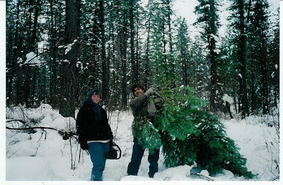

When he was a free man: Scott Molen (right) enjoys a snowboarding trip with a friend. Molen is presently serving a prison sentence for a crime he didn't commit -- a fact acknowledged by one of the people responsible for putting him behind bars.
"When you boil the whole thing down and look at it," comments Ken McKay regarding the conviction of Boise resident Scott Molen on charges of sexual misconduct with his step-granddaughter, "there wasn't a single shred of evidence."
Certainly, the prosecution assembled a lurid and shocking story, anecdote-rich and heavily seasoned with outrage. But examined dispassionately, trying to make the evidence support the allegations is as futile as trying to sit on a cloud.
"[T]here were kind of fantastic charges about -- for instance, there was a pair of [girl's] undergarments that had a blood stain in them," McKay recalls, but this piece of critical physical evidence was "never produced."
This was probably not the product of an oversight, but rather a deliberately deceptive partial disclosure by an opportunistic prosecutor: The bloodstained underwear were discovered when the purported victim, a pre-pubescent girl, was living in Phoenix, Arizona, nearly 1,000 miles from the man accused of molesting her.
At the time, the alleged victim's mother was effectively living with a boyfriend of exceptionally dubious character (her most recent of several paramours of that variety) who left the young girl terrified, according to people who spoke with her.
Rather than incriminating Scott Molen, the underwear should have served as a critical piece of exculpatory evidence -- assuming that the garment even existed.
There was also a significant contradiction in the prosecution's description of the location at which the supposed defilement of the child took place. The original narrative described episodes of abuse taking place in a camper. But this was impossible, as McKay recalls, because the defense was able to demonstrate that "the camper was crushed by snow" before such abhorrent acts could have taken place therein.

Christmas past: Scott Molen flanked by his wife Connie (right) and her daughter Mandi.
McKay likewise criticizes the interviewing techniques employed by the nurse working for the Child At Risk Evaluation Services (CARES) of St. Luke's Hospital in Boise during the original examination in July, 2005.
"There was a point ... [when] the CARE interviewer made a pretty critical mistake when she was interviewing" the alleged victim, McKay insists. There was a point in the interview, easily discerned by a reasonably careful observer, at which the interviewer "actually put her words, used her own words to describe what the young woman was saying and from that point forward in the interview [the alleged victim] used the interviewer's words."
This is a critical point: From that point it was the interviewer who was effectively telling the story, rather than the supposed victim. The CARES nurse was prompting the girl, guiding her, molding the language in such a way as to fit the standard template of a sex offense charge. "I remember watching [the recorded interview] and thinking, wow that's really, that's really incorrect," McKay relates.
All of this adds up to abundant reasonable doubt, McKay insists: "[B]ased on the evidence, boy, I couldn't say the state made their case." Yet McKay, who served as foreman of the jury that convicted Molens, didn't act on that conclusion until a year after Molens was sent to prison.
McKay's comments, as quoted above, were extracted from a lengthy interview conducted by a private investigator hired by Scott Molens' wife Connie as part of an attempt to overturn the patently unjust conviction -- and, hopefully, to impose some measure of accountability on those responsible for it.
Like too many spouses and family members of unjustly convicted people, Connie has assembled and collated a huge amount of evidence regarding the official misconduct, abuse of discretion, and corruption that characterized the prosecution of her husband. Examining that material, I am struck by the fact that Molen would still be a free man (well, as free as any of us are in late imperial America) if one of his fellow citizens had thought like a citizen, rather than behaving like a dutiful collectivist drone.
Long before McKay and his colleagues were sequestered to deliberate the charges against Scott Molens, it was clear that the prosecution's case was less substantial than the reflected shadow of a boiled ghost.
Yet McKay, who could have -- and should have -- either built a coalition for acquittal or hung the jury, meekly submitted to the reflexive punitive instincts of the majority.
"I think some of the people that were [on the jury], I think they had decided that he was guilty pretty early on and there was really no reasoning with them about that," McKay recalls.
An appropriate word to describes that attitude is "prejudice"; a better one might be "bigotry," a term describing a prejudice that has made itself entirely impervious to evidence. That is a perfectly suitable term to describe an unreasoning determination to convict a defendant irrespective of the evidence. McKay is an engineer by training; his professional credo is "In God we trust; everybody else bring your data."
As jury foreman, McKay was ethically required to make every effort to overcome the bigotry of his fellow jurors using the tools of rational thought provided to him by his academic training and innate intelligence.
Rather than distinguishing himself by standing fast in defense of an indispensable principle -- namely, that the state has to prove its case against the accused -- McKay sought refuge in the consensus of the collective: "I remember ... we had gone I think several hours in deliberation and a few of us were dug in [on behalf of acquittal] and the guilty people were adamant that he was guilty ... I was thinking, well, man, eight other people say that he's guilty so where am I, what am I missing here?"
I cannot recall ever being exposed to a more perfect specimen of collectivist thought. Here was a man sufficiently intelligent and perceptive to recognize that the prosecution had failed to prove its case, yet his faculty for rational action was preempted by the irresistible need to conform -- even at the price of an innocent man's freedom.


Confronted with a prosecution that couldn't muster a substantive case, McKay focused not on the state's missing evidence, but rather on his own supposed delinquency for failing to see things the way the State required him to.
To someone capable of exercising a modicum of critical thought, the grounds for reasonable doubt were so abundant as to suggest that the prosecution of Scott Molen was an act of deliberate, conscious malice.
The abuse of Molen's step-granddaughter supposedly began in 2004, when the child was eight years old. During a sleep-over with friends in June 2005, the girl made comments that were construed as "disclosure" of sexual abuse.
In short order she was interviewed by Boise Police Officer Tammy Kennedy, who reported that the girl had described multiple sexual contacts, including up to a dozen instances of full intercourse.
The original audiotape of that interview, however, was conveniently lost. Although Kennedy's report -- which contained adult sexual expressions not likely to have fallen from the mouth of an 8-year-old girl, however carnally precocious -- was dated June 2005, it strongly resembles the CARES interview in both tone and substance; this is significant since Kennedy's report wasn't filed until after the CARES interview.
Furthermore, during the trial the child repudiated much of what she had supposedly told Officer Kennedy, and at one point suggested that she needed Kennedy's help to "remember" certain things she had allegedly disclosed.
The initial physical examination of the child failed to turn up conclusive evidence of assault rape, which was the charge initially listed by Officer Kennedy. The CARES nurse reported that the child's genitals appeared to display injuries "suggestive of blunt force penetrating trauma often seen in sexual abuse." However, the results of a a more detailed examination using a specialized instrument called a colposcope were withheld from the defense for two years; it wasn't until well into the trial that this critical physical evidence was obtained through subpoena.
During his rebuttal testimony on behalf of the defense, Dr. Edward Friedlander, chairman of the Department of Pathology at Kansas City University College of Osteopathic Medicine, evaluated the colposcopic images. His conclusion was that they depicted the anatomy of a child who was a "perfectly intact virgin," rather than one who had been forcibly violated ten or twelve times, as the prosecution had alleged.
Scott was never put under arrest prior to his conviction, which is a curious oversight if he were the kind of bipedal predator who molests little girls. A search warrant for his home was returned to the court without being executed, an oddity that suggests, once again, that investigators didn't really consider Scott a credible suspect. Yet the prosecution -- an apparatus designed to secure convictions, not to pursue a true and just verdict -- continued its plodding, relentless assault.
As almost always happens in cases of this kind, Scott was approached by the prosecutor with a "deal": If he had been willing to admit to unspecified criminal "misconduct" with the child, he would be given a "lenient" sentence -- six months to a year behind bars -- with assurances that his life would not be ruined by having his name placed on the sex offender registry. As he was guilty of exactly nothing, Scott turned down the "deal," most likely prompting the prosecution to exert itself to make an example of him.
Convicted on a single count of "lewd and lascivious conduct with a child," Scott will not come up for parole for several more years -- and he won't be granted parole unless he not only is willing to admit to a crime he clearly didn't commit, but passes a lie detector test to demonstrate that he believes that he committed the crime.
"Scott spends his time in prison in the company of people who really did vile, disgusting things like the ones he was falsely accused of," his wife Connie told Pro Libertate. "Among themselves, they're completely open in admitting what they did. Some of them even brag about how all they have to do is to admit their offenses and they can be paroled and go out and commit the same crimes all over again. And Scott will stay in prison just as long as the system can hold him, because he never did those awful things and will never tell the lies the system demands of him."
Ken McKay, the jury foreman who now admits Molen's evidence, was entirely willing to endorse and sustain the lies of the system that stole Molen's freedom. Despite knowing that the case assembled by Prosecutor Justin Whatcott was entirely spurious, McKay was willing to stand in the jury box and read a guilty verdict he knew to be unjust while looking his victim in the eye.
There are crimes of passion, of calculation, of opportunity. The imprisonment of Scott Molen reflects the professional depravity of Whatcott and his comrades, to be sure, but it was made possible by a crime of cowardice committed in the jury room.
QUICK UPDATE:
Please forgive the delay in posting your valued comments. I'm in the hospital, and will probably be here until at least tomorrow (Thursday) with a really nasty GI infection. I'm learning it's difficult to type while plugged into an IV stand....
Be sure to tune in to Pro Libertate Radio on the Liberty News Radio Network.
 Available now.
Available now.
Dum spiro, pugno!
51 comments:
It's absolutely disgusting that this happens in our country. Reminds me a friend who was recently incarcerated for child abuse (the domestic violence variety). An innocent man, behind bars due to overzealous prosecutors and CPS personnel.
"Twelve Angry Men" has apparently been rewritten as "One Lone Coward".
It is my desire that Ken McKay, the jury forewoman, trade places with Scott Molen. Once in prison herself, little Kenny would most probably become the butt of many pokes...I mean jokes.
As any conscientious liberty lover who has been summoned for jury duty within the last few years anywhere in Amerika can attest, the voire-dire process is designed to weed out people of our persuasion and fill petit juries with brainless sheeple like Ken McKay who will do the prosecutor/judge's (is there any difference between these two vermin other than a black robe?) bidding. If McKay is genuinely remorseful for his inexcusable, craven behavior as jury foreman in Scott Molen's trial (the fact that he served as foreman indicates that he has served on other juries in the past; I shudder to think how many other innocent defendants have been wrongly convicted as a result of his apathy, cowardice and ignorance), he would make a public mea culpa and join Molen's family in fighting to overturn Scott's conviction and set him free. Otherwise, McKay's words are an empty insult to the Molen family and he deserves no pity whatsoever once his turn comes due to be victimized by the Amerikan "justice" system.
It is beyond "difficult" to comprehend how someone who was not convinced of guilt by the evidence presented at trial could, nevertheless, vote to convict the poor unfortunate individual.
Maybe, some day, that same juror will be accused of something he did not do and one of his "peers" will give him the same "justice" he helped mete out. In this instance, as far as I am concerned, JUSTICE will have indeed been delivered to him, unlike that which he delivered.
Politics stinks and everything is politicized. That is why we must endure the olfactory assault that emanates from the euphemistically referred to "halls of justice" in this state as well as across the nation, to include the state and federal levels.
Wow, are you telling our son's story??? Only it wasn't his grand daughter, he is only 30. However after a four day trial it took the jury only 10 minutes to convict him to 8-16 years!!! We even have DNA evidence that states it is NOT his DNA but....the jury was sleeping during the defense testimony, ate lunch with the family and totally ignored our exculpatory evidence!
www.justiceformike.net
We are petitioning to Michael Moore to do a documentary on wrongful convictions. You might want to sign the petition at:
http://www.thepetitionsite.com/1/ask-michael-moore-to-document-the-injustice-system
This has GOT to be stopped!!!!
"now admits Molen's evidence" => "now admits Molen's innocence"
Wait a minute. Didn't you have an article on someone who went through an identical scenario? If so then its deja-vu all over again.
mr mckay would best be described as female genitalia -- the p word --for his lack of a stance for this guy. and he probably complains about us losing our freedoms. but my complaint is not just against him, it's against every juror who allows this crap to happen.
rick
And you know what is the worst part of all this? Scott Molen's sentence did not begin when he was sent to jail. It begins the day he gets out. For the rest of his natural life, he is utterly f--k-d. He will never be able to become a doctor, a minister, or a lawyer, he will be refused entrance to educational institutions, he will be fired from jobs any day, even after 10 years of flawless service, he will have rocks thrown through his windows any night, even after living in that community for 10 years, he will be harassed by his local police who will follow him and look for his front wheels to cross the white line at a stop sign so they can give him a ticket, shopkeepers will be suddenly too busy to serve him at the cash register, nothing he does on behalf of humanity will be counted in his favor, he will be a pariah and a piece of scum in the eyes of "society" all the rest of his life. He will never know, from one second to the next, his entire life, when someone will say, "Hey! Aren't you the child rapist?"
Imagine it.
All so some asshole prosecutor can get a raise next January, or some militant dyke can tell her girlfriend she sent another patriarchal fascist to suffer for having balls and a penis.
What a country. It becomes more and more like Stalin's gulag every day. There are the apparatchiks with power, and there are the suffering peasants. There are the spies, and the spied upon. The accusers and the accused.
Now we wonder why some people go postal and become mass killers? There is usually a good reason that we are never told. "Society" as a whole usually gets what it deserves.
Lemuel Gulliver.
Let me confess, when I saw what this post was about, I almost quit reading. Only your skilful rendering kept my interest. This sort of prosecutorial crime is so common, we are becoming numb to it. While such numbness may not be the conscious plan of any man or group of men on this earth, it certainly shows a diabolical touch.
I am torn between crying out, "It's past time, Claire!" At the same time, I honestly believe nothing could be gained by acting on such sentiments. Yet, we know the game is fixed against a peaceful resolution. Sometimes I believe I understand some of what the prophet Elijah felt.
Aside from the disgusting behavior of the prosecutor, solely interested in adding another notch to his "gun," the more disturbing part is that the jury, knowing or suspecting innocence, would convict the guy anyway. It doesn't give one much faith in a jury of their peers anymore. Are we so dumbed down today that we can no longer even distinguish right from wrong, morality from immorality, justice from injustice?
Dave - Erstwhile Urban Wanderer
Broken,
You expressed my sentiments perfectly. My anger and frustration with American "jurisprudence" in particular and American statism in general has left me...well...broken.
-Broken #2
My first time on a jury, it consisted of several members who took the attitude that "He wouldn't have been arrested if he wasn't doing something wrong."
Not exactly the way I was lead to believe things worked, that's for sure.
If this wasn't the primary reason for me ending up in the "libertarian" camp, it was at least near the top of the list.
If I don't behave like a dutiful collectivist drone how will I get my sugardaddy check from mommygov!?
Anon @2:37: The “presumption of guilt” was part of the Reagan Administration… it was Edwin Meese who used almost the same words you did, “He wouldn’t have been arrested if he wasn’t doing something wrong:”
“Perhaps Meese’s most famous utterance (or maybe it’s just the one I remember most bitterly) was his pronouncement that anyone arrested by the police is almost surely guilty. He had little patience for the notion that one is innocent until proven guilty. That was just liberal nonsense. The ethos embodied by Meese drove Americans into a get-tough-on-crime frenzy. Three strikes and you’re out. Lock ’em up and throw away the key. After a generation of Meesian-style justice, the United States now leads the world in incarcerations.”
In responce to Mr Gulliver's comments, I find it "interesting" that the Boise County police officer who "lost" the evidence in Scott Molen's case suddenly surfaced as an officer 50 miles away in ADA COUNTY. She is now working in the same very small town that I, Scott Molen's wife, now live. This same officer parks her police cruiser in front of my home and, at times, one home down, several times per month. My question is WHY? Does this give you chills? This officer who was hired to serve and protect is now practicing a form of stalking and harrassment. What are her plans for me???????
When I was young the propaganda machine fed a steady diet of "Truth, Justice and the American Way" and as a young person I believed it. But it was a lie as all thing gov't . . .
Anyone who believes the courts are anything less than a money machine 'designed' to turn people into walking ATM's is delusional.
Especially if you are a man - which, you may have noticed this week, the female discount in play as Robert Manwill's mother can bond out while her co-torturer cannot. I suspected the mother from the very beginning as statistics clearly show that the most dangerous environment for a child post divorce is with the mother . . . Feminism combined with misplaced male chivalry has become disgusting.
Sic Semper Tyrannis
Mea Culpa . . . I intended to wish you a speedy recovery in my earlier post, but got a bit carried away with the topic, as you are my favorite blogger. Though I've only met you once very briefly, I guess I feel like you are a bit of a kindred spirit - if there be such :)
Sic Semper Tyrannis
I am a greater coward.
I'm not ignorant of examples like this, yet I file my tax return each year in fear of retribution.
I am a willing accomplice.
Scott Molen, please forgive me.
Father, please forgive me.
to anonymous...the greater coward.
you are not a coward for fearing that scores of armed agents will come to your house and kill you for not paying the extortion fee.
no. you are not a coward, no more than the jews were who paid the roman taxes. when a few did rebel, they were wiped out. some fights you can fight, and some you cannot. so fight the fights you can win while you are under the radar screen. this system cannot last forever, they never do.
rick
I believe there is a special place in Hell reserved for people like the prosecutor in this case. Anyone who abuses any position of authority to destroy the lives of innocent people are less than subhuman. Particularly those who do it for no other reason than to advance their own careers. Were I a man of lower moral content, I would be more than happy to deliver such people for judgment myself.
jk
Thank You, for writing this article for Scott and his family and friends. I stand my husband and lost custody of our chidlren because I would not say he is guilty. There was no phyiscal evidence and hymen intact even though she said intercourse for four years. As in Scott's case and had the same medical expert testify, but the jury did not listen and convicted him anyway and CPS says I am in denial because he got convicted.
I think that foreman should be hold accountable. Pehaps suing.
I hope you are better and out of the hospital by now. You know, only sick people go there, and the sooner you can leave, the better.
I hope you recover quickly and fully, Mr. Grigg.
Will,
We'd wondered what was going on, having seen a couple of references about your being sick in these comments, and then just now seeing your update at the end of this blog. We pray that you are out of the hospital by now and are regaining your strength daily. Sounds like you have had a very rough time of it.
Please take good care of yourself and get well soon. There are a lot of people who care about you and are praying that you will have a full speedy recovery!
There is an old saying that a grand jury will indict a ham sandwich, alluding to the relative ease with which prosecutors obtain indictments due to the one-sidedeness of the proceedings in favor of the prosecution. I think it is clear at this point, with a prison population approaching 2.5 million people and a public that for the most part wouldn't question the government even as much as McKay, that the cliche now pertains to a trial jury in any criminal case. They would have convict the ham sandwich even if there were no sign of ham.
To Connie:
Having read your comments my heart goes out to you. I will remember to keep you in my prayers that Christ might surround both you and your children. The Lord cares deeply for the widowed and the orphaned.- which is essentially what you and your family have become. He will not allow you to suffer at the evil hands of some ghoulish dyke cop.
Although probably hard to do - you might consider leaving the state.
Again my family will be praying for your protection as well as that of your unjustly imprisoned husband.
I want to thank all of you who have expressed your concern and offered up prayers on our behalf. Even though Scott and I have lost almost everything including our home, some of our family and our freedom we have not lost our faith nor our drive to help others who have been railroaded by a very corrupt system. We are learning and growing by leaps and bounds. We have made some lifelong friends through all of this and know that God is good. He is holding us in the palm of his hand. We won't be defeated. And on a lighter note, as they say "what doesn't kill you only makes you stronger"!...This is not to say we are not angry and that we don't cry. Oh yes, we are outraged but God willing we will turn that outrage into a positive movement. Again, thank you for your prayers. Connie Molen
You see here an example of what I mean when I say that the vast majority of people, and that includes YOU! are authoritarian... That is obedient to authority. And this will lead us to tyranny.
So take a look at this and see a nice long 6000 words or about 30 min to read argument to support this assertion.
Orwell's boot
factotum666.livejournal.com/829.html#cutid1
To the author Please, please, PLEASE visit Orwell's Boot. I am puting a link there to this article so that people can see just how strong this need to obey is. I Would really like your feedback, and if possible for you to contact me.
thank you
PS, I would have written directly , but I could not find an emial address
Will,
Here's believing that our Master will not leave you, or your family, unprovided for, nor undefended in your time of trial.
Ced Crawley
This is the step daughter of Scott Molen. I know that this man had done the crime in which he is serving time for! This man was horribly abusive physically, verbally, and emotionally. My mother Connie Molen met this man while he was serving time in prison. When his time was done she moved him into our home with four teenage girls! What was she thinking? Now my gorgeous sweet little niece has suffered the consequenses of having this man in our lives. Mom! Get over it and stop tearing us apart! You are both sick individuals! We need a cleaner society with good citizens, not scum bags like this!
Heather, what can you provide by way of tangible, objective evidence to substantiate your supposed knowledge of Scott Molen's purported crimes?
The foreman of the jury that convicted him admits that there wasn't so much as a "shred" of evidence to support the accusation. Accusations themselves, however grievous, are not self-substantiating.
If you're correct, Molen is in prison, and since he insists that he's innocent -- and thus won't allocute to the crime -- he won't be paroled any time soon. If he's innocent of the crime, he doesn't belong there.
In either case, I have to ask: Why do you feel like you're being torn apart by Connie's efforts to exonerate Scott? Have you invested yourself in an assumption of guilt that won't withstand rational scrutiny, as the jury foreman (who examined the irrelevant material the prosecution called "evidence") has admitted?
Connie and I and other critics of the prosecution believe that the truth should be pried out, wherever it leads. What are you afraid of, and why?
Jurys report to the courthouse, have lunch and hotels paid for by the County and are forced to serve by the State BUT Jurys do NOT work for the states or the courts. The USA has far to many wrongful convictions (many 14 to 16 y/olds!)for this to continue.
Each potential jury must be reminded that they have a spine and we as public need not be so scared of the criminal element that we let this continue.
Until the public is aware that this could be your loved ones story, the D.A. will continue to win!! My husband and father of our 2 wonderful daughters was accused of lewd acts and got 25 to life. He said/ she said, no proof just rough housing and throwing kids in a public pool.Our story is as tragic as the Molens, we too have our faith that sustains us and we believe justice will prevail. www.truthcafe.net
, to learn more about us the Vanderbergs. Sincerely, Teri Vanderberg
Unfortunately, he is very likely guilty. There are those who know that Scott has done this before.
There's nothing quite as convincing as an anonymous accusation based on purported facts nobody has ever seen.
I am a friend of Connie, Scotts wife, and I am sorry to say, Connie died last year, his one true friend, the one that stood by him always, believed in him and wanted to see justice done .. he lost her. Now he is truely alone.
I know that Scott is guilty of this crime and so do A LOT of other people.
Scott has admitted to this crime to several people, blaming the victim.
If you do a back ground check on Scott you will find out a lot about him that is very alarming.
Scotts legal name is Michael Scott Molen, he grew up in Utah, and that is where he has committed most of his crimes, including another accusation of molesting a 5 year old girl.
If you are not willing to do the back ground check yourself I would be more then happy to post it.
I've noticed an interesting pattern here: Scott's defenders are open, candid, and willing to go on record; those who insist that they "know" he is guilty demand anonymity and cling to the shadows, while making extravagant claims of privileged knowledge.
By all means, send me the background check -- WNGrigg[at]msn[dot]com. I would be very eager to follow up on it.
I have read it all now.Take it from someone that was there,he is not an innocent man in no means.Please before reading all this bull crap look at his record he has molested before this.His step grandaughter loved him so much and to be hurt and lied to through all of this and she could not understand why her grandma believed him over her it was devastating for her.Connie was not allowed at all in the court room through this whole trial so she did not hear or see what was going on that week so it was only hear say.I feel bad for Connie to live her last few years on earth fighting for a man that repeatedly lied to her.But now she can see the real truth and she is standing next to her granddaughter not him !!!
Connie was not allowed at all in the court room through this whole trial so she did not hear or see what was going on that week so it was only hear say.
Ken McKay, the foreman of the jury that convicted Scott, was in the courtroom, and after examining every detail of the prosecution's case came to the conclusion that "there wasn't a single shred of evidence" to support the charges against Scott Molen.
Connie wasn't in the courtroom, but as I noted above she did collect a huge volume of documentation about the case, which I reviewed very carefully before writing this essay. A few weeks ago one of Scott Molen's detractors supplied me with additional information, which I am reviewing as well.
If reasonable doubt exists, it is the moral and legal duty of a jury to acquit the accused. This is true even -- no, especially -- when the defendant stands accused of genuinely hideous crimes, such as child sexual abuse.
This isn't "bull crap"; it's called "due process."
As somebody who was a genuinely disinterested observer who has read the record, I found abundant ground for reasonable doubt in this case -- as did the jury foreman, who for some reason didn't act on that doubt until a year after the verdict had been rendered.
Mr Grigg,
Where is that back ground check on Mr Michael Scott Molen. Please provide for all to see.
Here's what I'll do:
I'm going to revisit this case in a future essay. When I do so I'll provide a link to an archive of relevant documents -- including not just the background check to which you refer, but also the material that led the jury foreman to conclude that Molen had been unjustly convicted.
I must ask: Given that Molen is already in prison, why are you so insistent that the material from the "background check" be made public? Wouldn't this be gratuitous, since he's already been imprisoned?
Are you worried that the case presented against him was weak, and that as a result he might somehow be given a new trial? I would welcome this development, as would Mr. Molen. You should as well, if the case against him was as airtight as you appear to believe.
Here's a question you really should answer: If, as the jury foreman tardily admitted, there was abundant reasonable doubt regarding Scott Molen's guilt, wasn't the jury morally and legally obligated to acquit him?
There was ONE man that stated that he thought there was reasonable doubt for this conviction.
Scott was convicted, because he is guilty.
Do you have any idea what this case has done to the family involved. And you honestly think that ANY of them would suffer CONTINUALLY for this long, over something that never happened?
This family was a very tight nit family, that was ripped apart, and the surviving members are STILL trying to get through this. This isnt something that just goes away. Not to mention the little girl that still isnt sure of who she is, because of the innocence that Scott has stolen from her.
I believe this case is solid, and I believe that the truth will prevail. As it has over and over.
One piece that you are missing as well, is that Scott has admitted to this crime. That is one crucial piece that you all keep leaving out.
The information that you have written about this case in this blog is incorrect. So when you "investigate" maybe you should get the correct information so it can be correctly investigated!
There was ONE man that stated that he thought there was reasonable doubt for this conviction.
You're not reading carefully, so let me underscore one of several key facts you either can't see or are choosing to ignore.
According to McKay: "I remember ... we had gone I think several hours in deliberation and a few of us were dug in [on behalf of acquittal] and the guilty people were adamant that he was guilty ... I was thinking, well, man, eight other people say that he's guilty so where am I, what am I missing here?"
One unpersuaded panelist is sufficient to hang a jury. In this case, there were at least four people -- not one -- who were "dug in" on behalf of acquittal.
By any rational and unprejudiced reading, that's abundant reasonable doubt -- especially in light of the fact that the jury foreman, an engineer trained to assess date skeptically and dispassionately, tardily admitted that the state hadn't made its case against Molen.
That the family has been traumatized by this is obvious. That the girl was victimized by someone appears highly probable. That Scott Molen may have been the perpetrator is a possibility. That his conviction was unjust, however, is a certainty.
The more grievous the crime, the greater our responsibility to compel the state to prove the guilt of the accused. As the jury foreman admitted, in testimony against his own interest, that didn't happen here. Of particular interest is the culpable misconduct on the part of the prosecutor.
Are you familiar with the Dodge murder case in Idaho Falls, in which police extracted a false "confession" from the young man now serving a life sentence for a murder he didn't commit? --
http://video.msnbc.msn.com/dateline/48786251#48786251
The mother of that murdered girl is now working to free that innocently convicted man. Her daughter was sexually violated, and murdered -- which is the most horrible thing I can imagine. She is seeking to free the man convicted of that crime because that was a miscarriage of justice. She had sufficient character to suppress her desire for vengeance and to seek actual justice without fear or favor. Go thou, and do likewise.
Where do people belong that molest little children? In prison.
That is exactly where Scott belongs. He is in the right place.
Investigate, you will soon learn the truth, but you must first straighten out the lies that are in this blog. You cant investigate the truth with lies.
Where do people belong that molest little children? In prison.
People who are proven to have committed such crimes belong in prison. According to the Jury Foreman, the case against Scott Molen wasn't proven.
Investigate, you will soon learn the truth, but you must first straighten out the lies that are in this blog. You cant investigate the truth with lies.
Itemize and rebut the "lies" you claim to have found in the essay above. Since you appear to be a stranger to rational thinking and principled skepticism, I should point out that someone who examines the evidence and draws a different conclusion than yours isn't "lying."
Is Mr. McKay a liar because, after examining the case in detail, he concluded -- and tardily admitted -- that the prosecution's evidence against Molen was inadequate to support a conviction? Was this true of the other three jurors who held out for the same reason, until McKay persuaded them to vote guilty?
In fact, McKay had made a liar of himself by voting for a verdict he didn't find plausible, and then browbeating three other jurors into doing so. He needs to make restitution, and admitting what he did is a good down-payment.
Here's one other thing to consider, assuming -- against the abundant evidence provided by our exchange -- that you have sufficient character to examine your conclusions honestly:
Scott Molen, as you point out, is in prison. He could have qualified for early release if he would have admitted to the charge against him, which he has never done in spite of the fact that it would cost him nothing.
McKay's admission was made against interest; the same is true of Molen's insistence that he was wrongly convicted. Testimony against interest is considered to be particularly compelling, at least in legal proceedings that occur within the reality-based community.
To me it seems clear, by a preponderance of evidence, that if he were guilty, he would probably be a free man right now. You are entirely free to draw a different conclusion, and I won't cast aspersions on your character for doing so. It would be commendably adult of you to reciprocate.
The anonymous people above (none of whom I have ever met or spoken to) are telling the truth about Scott's previous behavior. He has previously been accused of molesting at least two other girls from entirely different families who also do not live anywhere near the victim in this case and have never met her or her family! In the 1980s the 1st victim wanted to come forward and testify against Scott at the time she heard there was a 2nd victim. Unfortunately, her parent chose to keep it under wraps and didn't allow her to come forward or testify for the 2nd victim. I don't know if the 2nd victim continued prosecution or not. Had the 1st victim been allowed to testify by her parent, perhaps his 3rd victim would have been spared this abuse. I wouldn't be surprised if the count was more than three victims by now, but those are the accusations I do know of, and one comes from a source that I know beyond a shadow of a doubt would not lie. Scott has been to prison/jail more than a few times in his past before he met Connie. He has also lived in New Mexico. You might want to check the prison rolls for Santa Fe and Carlsbad in 1980. Some people post "anonymously" because they risk causing family rifts by putting their names out there. It does not mean they are lying. You have a lot of nerve to assume that an anonymous poster is lying. You definitely do not look good defending a pedophile or should I say "alleged" pedophile so you can feel better?
You're fighting over Scott Molen's "unjust" trial is not a position of respect. This is a man with a criminal background who has been in both jail and prison (in incidences not related to pedophilia) and has been accused of pedophilia by "at least" three different children. Regardless of how you think the justice system should work, there are certainly cases that are far less murky that you could spend your time trying to defend. Trust me, this is not the case you want to be defending. The fact that you choose to defend this particular case makes me question your character. The greater good here is to first protect CHILDREN. The justice system comes second. Find yourself a case worthy of defending! To Heather and her family: I am so sorry for what you have gone through. I wish that the 1st victim's parent had not required her to remain silent. Your niece and her family are amazing and courageous. You did not deserve to have this happen in your lives. Your actions will save other children from the same fate. You can be proud that you are strong individuals who stood up for what is right and protected society and particularly children. You have my deepest respect!
When the foreman of the jury says that "there wasn't a single shred of evidence" to justify Molen's conviction, an injustice has been done.
This is not a "murky" or ambiguous matter, irrespective of Molen's admitted criminal background or the unspecified and unproven allegations flung around by people who insist on anonymity.
The fact that you choose to defend this particular case makes me question your character. The greater good here is to first protect CHILDREN.
The more heinous the alleged offense, the more diligent we must be in forcing the state to prove the defendant's guilt. My responsibility as both a parent and citizen is to protect my children from the state; this means refusing to succumb to the familiar group psychosis in which reason falls prey to sentimental invocation of THE CHILDREN, and accusations are considered as good as proof.
Post a Comment